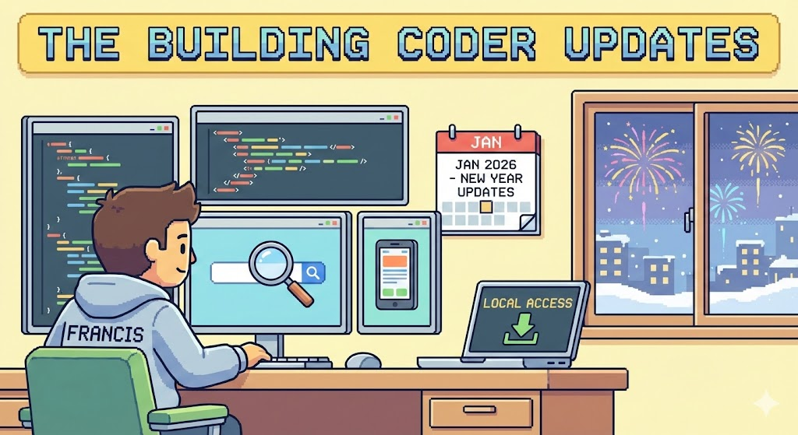

TBC Updates in 2026
As we recently shared, The Building Coder is now self-hosted. You can access it directly on GitHub or run it locally on your own machine.
This major transformation was made possible by the impressive work of Francis @parametrix Sebastian. Francis very generously took the initiative to reinvigorate The Building Coder, migrating the architecture and providing the following summary and overview of the significant changes that have taken place behind the scenes.
Executive Summary
The Building Coder blog has migrated from Typepad to a fully self-hosted GitHub Pages site. Key highlights:
- Offline-capable – All 2,079 posts (2008-2025) work without internet
- Dual navigation – 58 topic categories + chronological timeline sidebars
- Pagefind search – Fast, sharded full-text search across 69,000+ words
- Automated publishing – Push a Markdown draft and GitHub Actions does the rest
- Version 1.x for the new versions in the new era in 2026
Contents
The Big Picture
The Typepad era is over. The Building Coder is now a fully self-hosted static site on GitHub Pages with complete offline capability. All 2,079 blog posts from 2008-2025 are preserved and accessible without an internet connection.
Key architectural changes:
- Link Integrity: over 13,500 internal links converted from Typepad URLs to local file paths
- Structure: 2,066 HTML fragments wrapped in proper, modern document structure
- Portability: all resources now use relative paths, ensuring compatibility with GitHub Pages and local clones.
New Features
- Wiki-Style TOC Sidebar navigation via sidebars and hamburger: - Left Sidebar: 58 topic categories containing 2,256 curated post links - Right Sidebar: chronological timeline organized by year and month - Mobile Experience: responsive "hamburger" menu and swipe-enabled Bottom Sheet for chronological navigation on small device with three states: collapsed, years, and months.
- Copy to Clipboard – hover over any code block to copy with one click.
- Real-time search filtering across all content.
Search Capabilities
The archive now features Pagefind search, replacing the previous 6.9MB custom index:
- Sharded index – Loads only 50-100KB per query
- 69,042 unique words indexed across all posts
- Multi-word AND search – All terms must match
- In-page highlighting – Use
?highlight=termURL parameter - Keyboard navigation – F3/Shift+F3 for next/prev match
- Content match indicators with expandable excerpts
Publishing Workflow
New posts can be added via GitHub Actions or local Python scripts:
- Create a Markdown draft in
a/drafts/with YAML front matter - Push to GitHub – the Action auto-publishes
- Optionally assign to a topic via the "Manage Topics" workflow
Available scripts:
publish_post.py– Convert Markdown to HTMLdelete_post.py– Remove posts from all indicesupdate_post.py– Modify published post metadatamanage_topics.py– Add/remove posts from topic categories
Release History
| Release | Date | Summary |
|---|---|---|
| 0.2078.0 | Aug 29, 2025 | Last Typepad-era release (post 2078 by Pedro) |
| 1.2078.0 | Jan 5, 2026 | Complete re-architecture for GitHub Pages |
| 1.2078.1 | Jan 6, 2026 | Fixed faulty topic group links |
| 1.2079.0 | Jan 8, 2026 | First post (2079) in new era, content fixes |
| 1.2079.1 | Jan 10, 2026 | Content search functionality (WIP) |
| 1.2079.2 | Jan 13, 2026 | Content search completed |
| 1.2079.3 | Jan 14, 2026 | Contributions report and AI coding agent instructions |
The version scheme changed from 0.NNNN.x (post count) to 1.NNNN.x to mark the new self-hosted era.
Ever so many thanks to Francis for this great contribution!
If you find any improvement to add yourself or issue to raise, please create a pull request or report it. Thank you!
